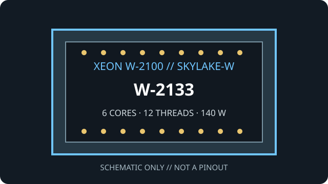

[ INDIVIDUAL WORKSTATION CPU ]
Intel Xeon W-2133
Skylake-W (Xeon W-2100 series), 2017. Exact model: Intel Xeon W-2133. 6 cores/12 threads; 3.60 GHz base / 3.90 GHz maximum turbo; 8.25 MB cache; 140 W TDP; LGA2066.

MODEL ID: Intel Xeon W-2133. Confirm the model marking and board CPU support list; LGA2066 fit alone is not proof of compatibility.
Model specifications
| Architecture / generation | Skylake-W, Xeon W-2100 workstation generation (2017) |
|---|---|
| Exact part | Intel Xeon W-2133 |
| Package / socket | FC-LGA2066 (LGA2066 / Socket R4) |
| Compute and clocks | 6 cores / 12 threads; 3.60 GHz base; up to 3.90 GHz Intel Turbo Boost 2.0 |
| Cache / power | 8.25 MB Intel Smart Cache; 140 W TDP |
| Memory | 4-channel DDR4-2666; ECC support; up to 512 GB maximum (board and DIMM type dependent) |
| Expansion | 48 PCI Express 3.0 lanes from CPU |
| Board compatibility | Single-socket C422/LGA2066 workstation board qualified for Xeon W-2100, such as Supermicro X11SRA-F; verify exact W-2133 support, board revision and BIOS with the maker. |
Compatibility and service
- Confirm the motherboard maker's exact W-2133 compatibility list and BIOS minimum before installation.
- Use four-channel DDR4-2666 ECC memory validated for the exact board; DIMM type and capacity limits are platform-specific.
- Select a cooler and power solution for the 140 W CPU; follow board airflow and thermal guidance.
- No integrated graphics; install a discrete display adapter if required.
Sources & further reading
- Intel ARK — Xeon W-2133 model lookupIntel manufacturer model specifications and identifiers.
- Intel — Xeon W processor family overviewIntel overview of Xeon W workstation processors and platform features.
- Supermicro — X11SRA-F workstation motherboardBoard-manufacturer platform details; check CPU support and firmware notes.